Komono, Mie: things to do, food and stays
Komono · Mie
Komono
Highlighted on the Mie map.
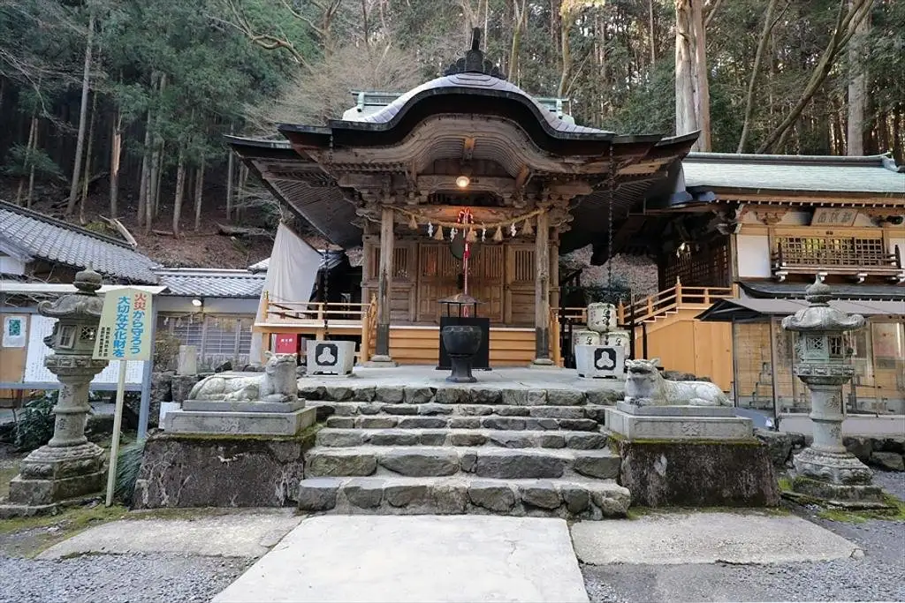
Stay
湯の山 素粋居
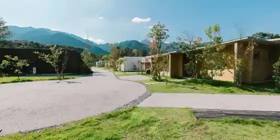
Yu No Yama Moto Sui Kyo
アクアイグニス 片岡温泉
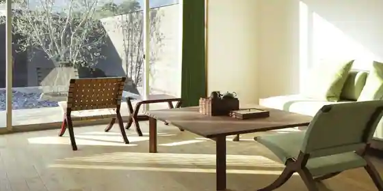
Akuaigunisu Kataoka Onsen
Inn at Kataoka Onsen in Komono.
鹿の湯ホテル
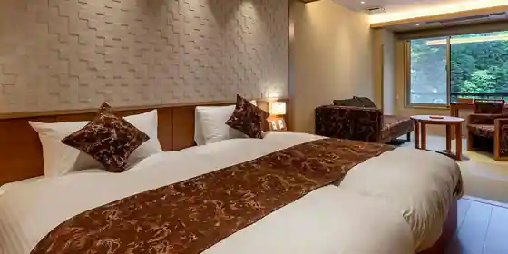
Shika No Yu Hotel
Hotel in Komono with scenic views.
旅館 寿亭
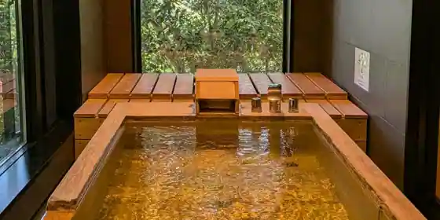
Ryokan Hisashi Tei
Ryokan inn in Komono with private baths and in-room dining.
FREE AND EASY CAMP RESORT
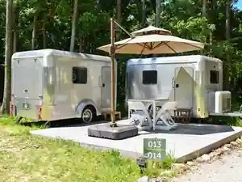
FREE AND EASY CAMP RESORT
フォレストガーデン菰野
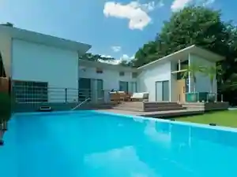
Foresuto Garden Komono
Inn in Chigusaagarieno, Komono with a sauna.
湯の山温泉 グリーンホテル
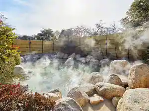
Yu No Yama Onsen Gurin Hotel
Hotel at Yunoyama Onsen in Chigusa, Komono with free-flowing hot spring baths.
ポイントバケーション湯の山温泉
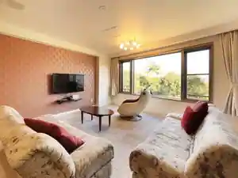
Pointobakeshon Yu No Yama Onsen
Inn at Shonyunoyama Onsen in Chigusa, Komono with pet-friendly rooms.
大同ガーデンホテル湯の山リゾート
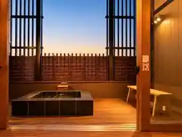
Daido Garden Hotel Yu No Yama Resort
Resort hotel in Chigusanishieno, Komono with open-air baths.
湯の山温泉 希望荘
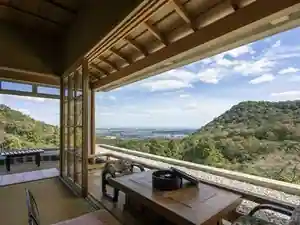
Yu No Yama Onsen Kibo So
Inn at Yunoyama Onsen in Chigusa, Komono with a large communal bath.
国民宿舎 湯の山ロッジ
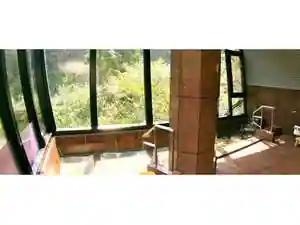
Kokuminshukusha Yu No Yama Lodge
湯の山温泉 記念日の宿 彩向陽（いろどりこうよう）
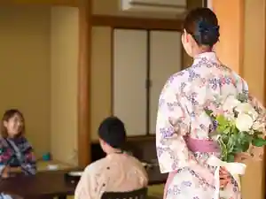
Yu No Yama Onsen Kinenbi No Yado Sai Koyo (Irodorikoyo)
Inn at Yunoyama Onsen in Komono with family-friendly stays.
Dining
コンフィチュール アッシュ
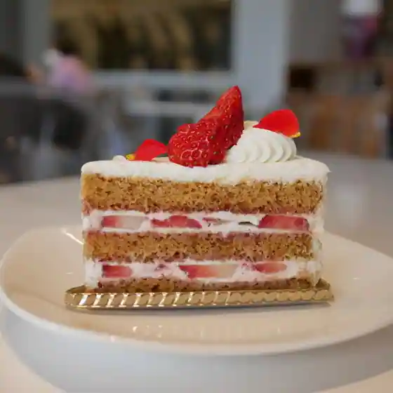
Konfichuru Asshu
露庵温味
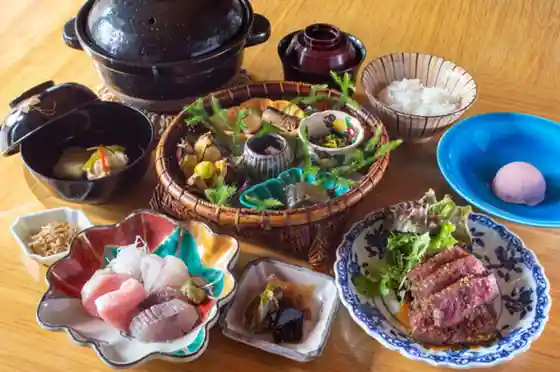
Roan On Aji
マリアージュ ドゥ ファリーヌ
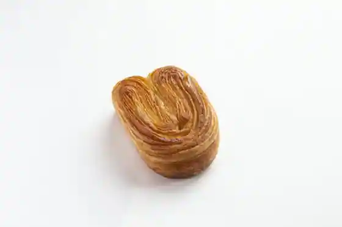
Mariaju Dou Farinu
蕎麦・宿 菊井
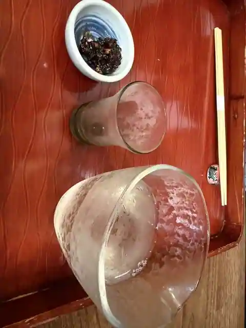
Soba Yado Kikui
サーラ ビアンキ アル・ケッチァーノ
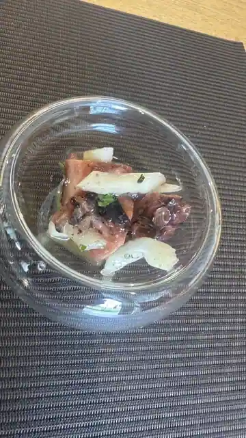
Sara Bianki Aru Ketchiano
珈琲屋 真戸運永
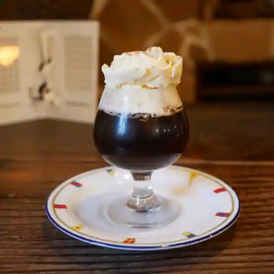
Coffee Ya Makoto Ko Un Ei
うなぎ四代目菊川 湯の山 素粋居店
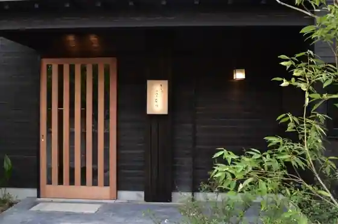
Unagi Shi Daime Kikugawa Yu No Yama Moto Sui Kyo
ヒノモリ
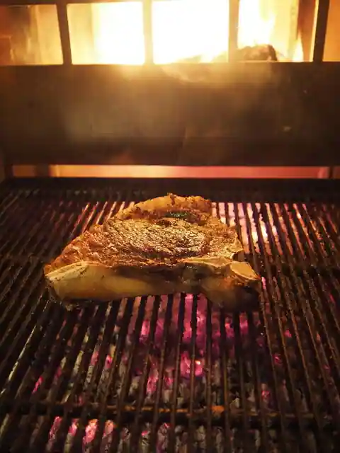
Hinomori
自然薯 茶茶
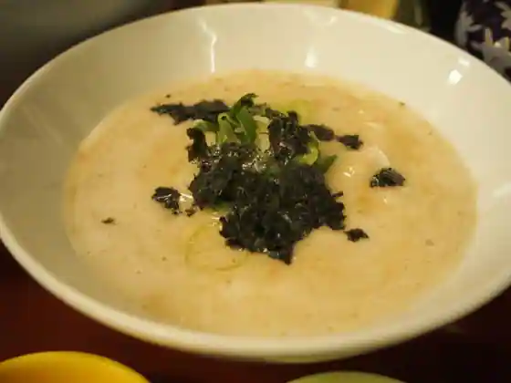
Shizen Sho Chacha
福村家
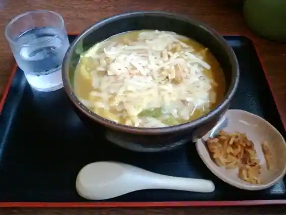
Fukumura Ie
そば切り 石垣
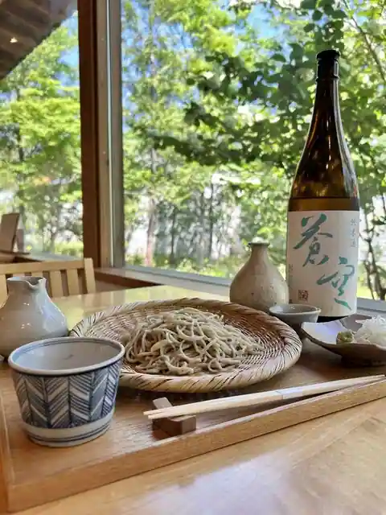
Soba Kiri Ishigaki
笠庵 賛否両論
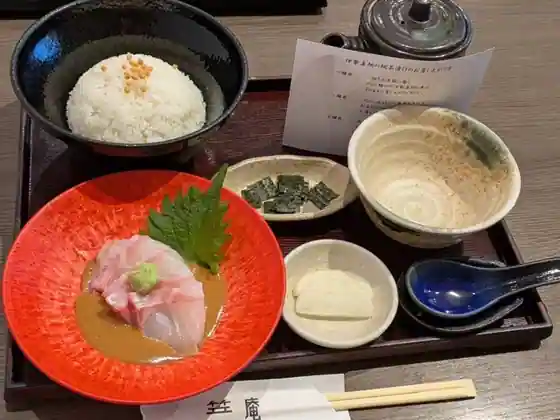
Kasa Iori Sanpiryoron
ラーメンちゃん 菰野店
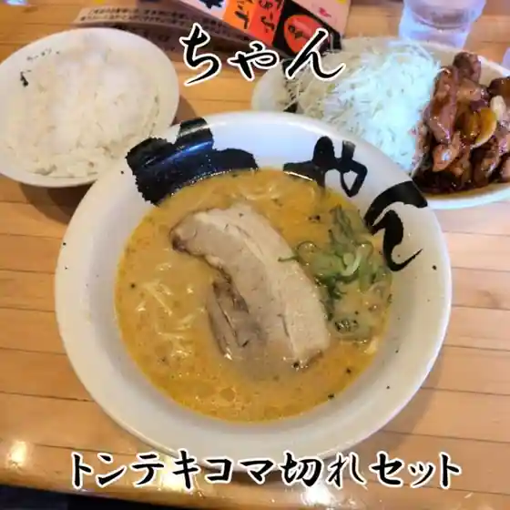
Ramen Chan Komono
うな忠
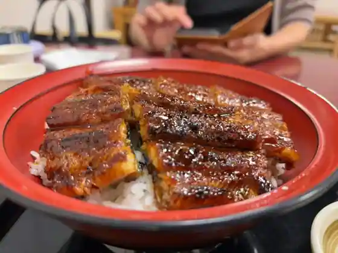
Una Tadashi
イル・ケッチァーノ ミエーレ
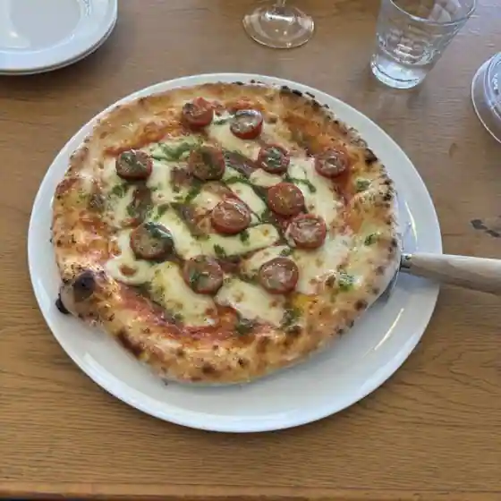
Iru Ketchiano Miere
展望レストラン ナチュール
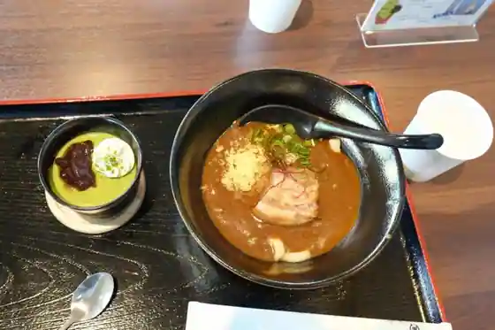
Tenbo Restaurant Nachuru
パクパク
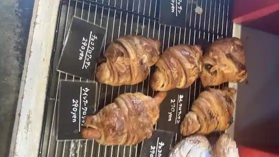
Pakupaku
Cafe Snug
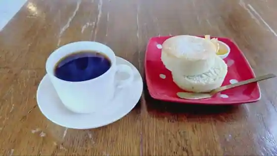
Cafe Snug
そばの華
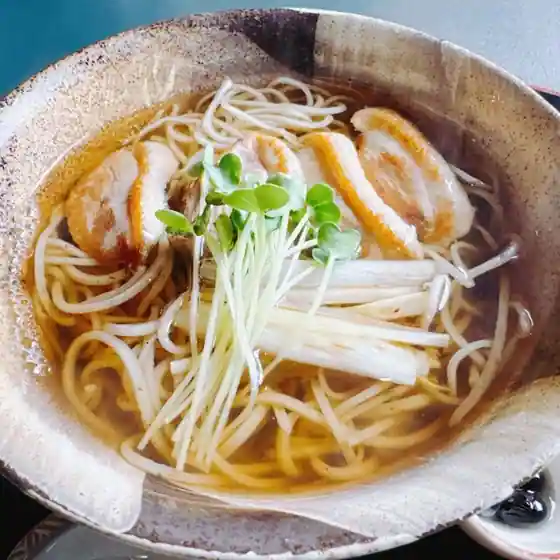
Sobano Hana
北の幸
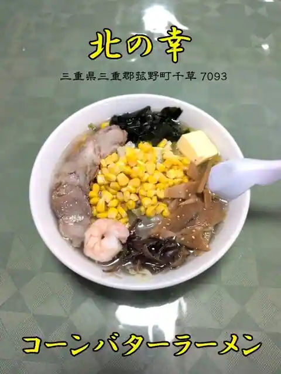
Kita No Sachi
大とんてき らーめん 中村家
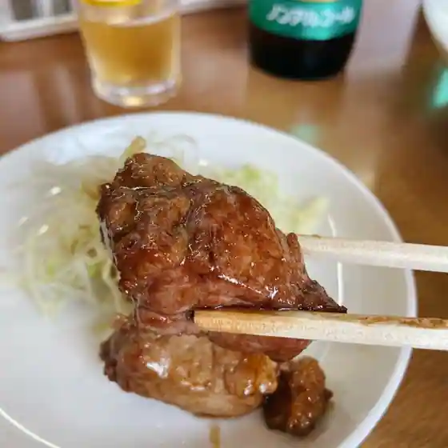
Dai Tonteki Ramen Nakamura Ie
やはらか とんかつ綾 菰野店
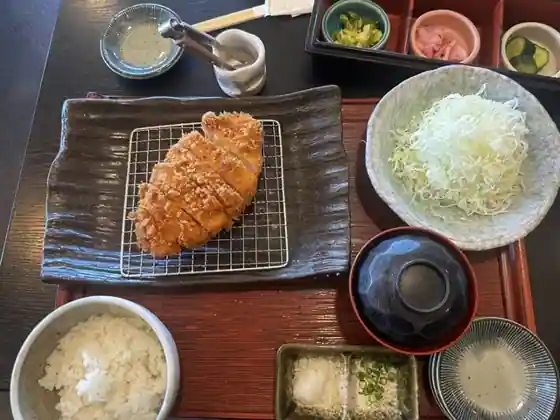
Yaharaka Tonkatsu Aya Komono
nest
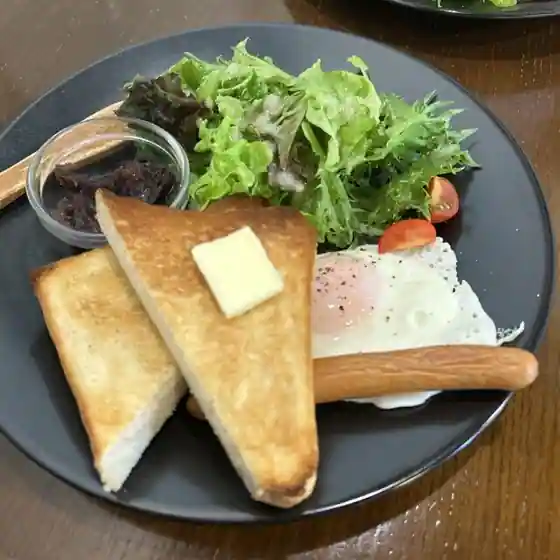
nest
珈琲庭 桜
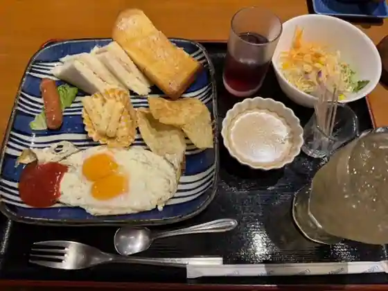
Coffee Niwa Sakura
Sights
Happu Campground
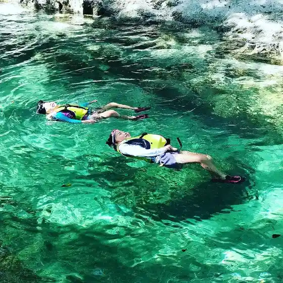
Kamoshikabagii
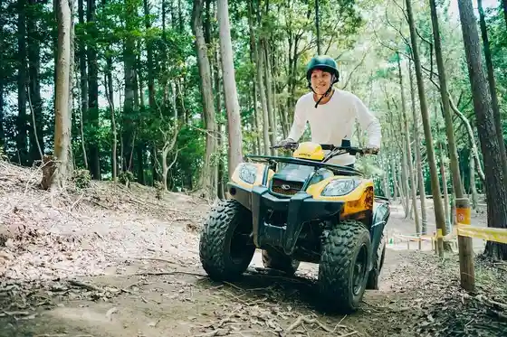
Yama Kujira Kafe
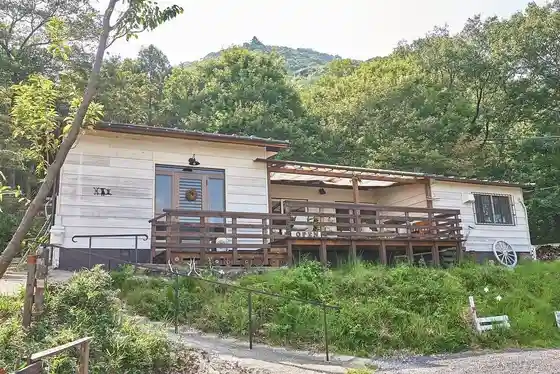
Oliver Coffee
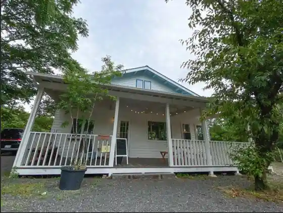
Kuni Shitei Tennenkinembutsu (Denko no Shidekobushi Oyobi Shitchi Shokubutsu Gunraku)
O Zaisho Ropuei
” Suzuka Sanmyaku Hatsu ” (Itadaki) Wo Mezasu Subete no Nin no Enerugii Ni ! Mieken no Shinmeibutsu (Itadaki Andonatsu) 3 Gatsu 6 Nichi (Kin) Hatsubai !
Adobencha Park Odoru Forest
Akuaigunisu
Foresutoadobencha Yu no Yama
SENBEI FACTORY SHOP Nichi no Shutsu Ya Seika
O Zaisho Gaku Tembo Terasu (COCORU Terasu) (Terasu Dekki Buranko)
Suzuka Sukai Line
Torii Dosan Campground
O Zaisho Gaku
Tomoaki Gorge
Fu Re Ishi
Yu no Yama Onsen Guriin Hotel Tenisukoto
TSUJIGUCHI FARM
O Zaisho Ski Area
O Zaisho Yamagami Kanko Rifuto
Odaka Campground
Gozaisho Shizengaku Ko
FREE AND EASY CAMP RESORT
Paramita Museum (paramita museum)
Kamagagaku
Dainichi Do Keidai no Gohyaku Rakan
Yu no Yama Joba Club
Tokaishizenhodo
Roadside Station Komono
Fukuo Shrine
Odaka Kannon
Shakagagaku
Tomoaki Chaya Campground
Oishi Park
Mieken Tami Forest
Torasan Memorial Museum
Manga Library Namida Saka
Denko no Shidekobushi Oyobi Shitchi Shokubutsu Gunraku
Namida Hashi Gyararii
Jizo Iwa
Tomoaki Campground
Togei Village
Guriin Land Asake
Tomoaki Rojji
Tonai Koya
Nekotani Daiichi Entei Oyobi Nekotani Daini Entei
Kamagagaku Buna Genshi Hayashi
Tonai Kabe
Tomoaki Sabo Gakushu Zon
Ao Taki
Kensho Tera
Kani Ike